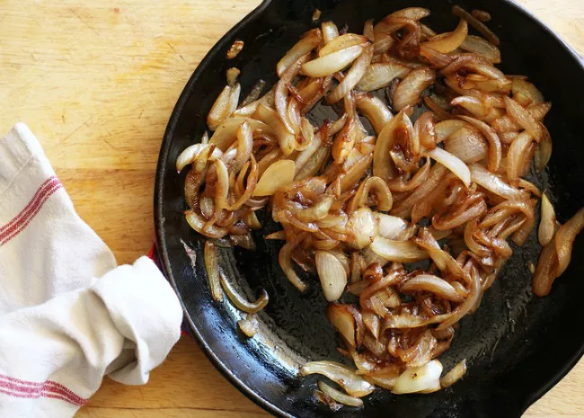

Caramelized Onions

Description
Caramelized onions for use as a topping on whatever you'd like.
Ingredients
- 2 to 3 yellow, white, or red onions
- 3 to 4 tablespoons olive oil or unsalted butter (or ideally, a combination of the two)
- A pinch of salt
- 1 tablespoon of red wine vinegar, balsamic vinegar, or wine
Steps
- Cut the stem and root ends off onions, then halve the onion and cut into thin slices.
- Add three to four tablespoons of fat to a large skillet over medium heat.
- Add onions and salt to skillet.
- Stir and continue stirring onions slowly until golden brown.